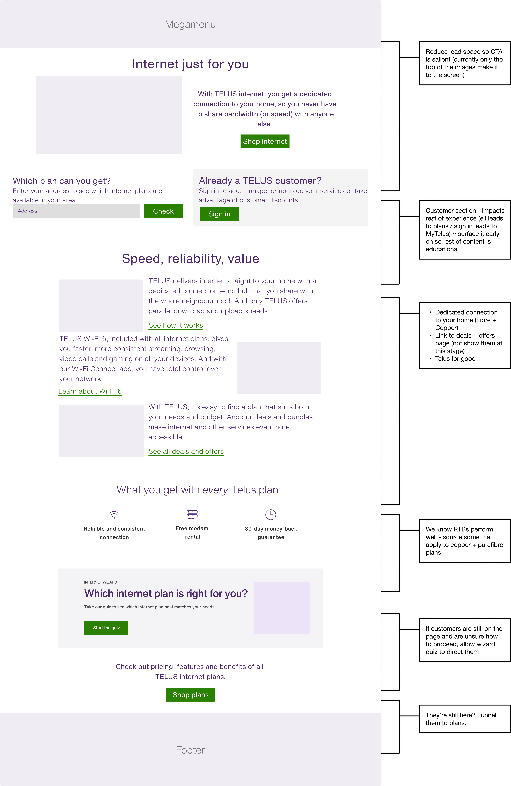
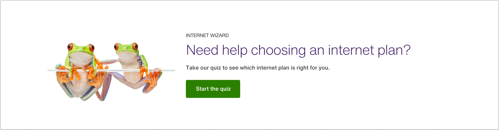

Telus Internet Sales Journey
Navigation redesign for Canada's second-largest telco, delivering a 42% increase in desired page visits. As part of a broader initiative to boost internet sales, we redesigned the mega navigation to guide users toward conversion using card sorting, user interviews, and A/B testing.
2022 - 2024 · Lead UX Designer
Project Management: Sarah Brain, Thelma Wiegert
UI Design and Animation: Marie Louka, Chris Samuel
Research: Rebecca Harrington
Content Strategy: Mike MacKinnon




Hi-fi card targeting behavioural segments

Hi-fi card design variant

Hi-fi card design variant

Results
+42%
visits to PureFibre
Internet homepage
Internet homepage
+4%
menu CTR
(vs. control)
(vs. control)
-0.5%
engagement
(users satisfied faster)
(users satisfied faster)